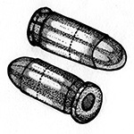
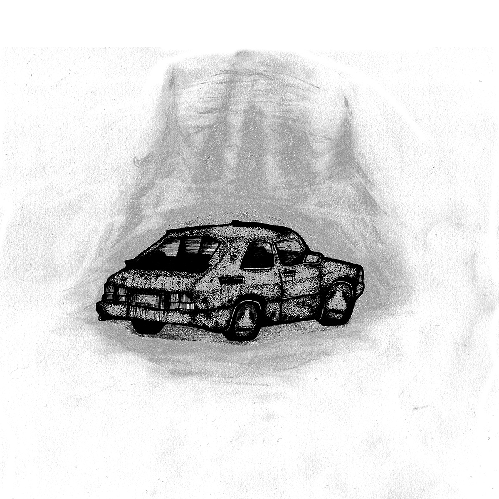

Johan K
Johan K hasar för det mesta fram genom korridorerna på Avdelning 34 i ett par slitna joggingskor. Hans rum är det första på höger sida om ingången men han spenderar väldigt lite tid där. Nu sitter han motvilligt still vid ett av borden i matrummet. Journalen beskriver honom som deprimerad och möjligtvis suicidal. Hans ansikte är inramat av en ovårdad härva av hår och skägg som får honom att se väldigt gammal ut. Han har själv inget bra svar på hur gammal han faktiskt är och det är överlag svårt att få honom att tala sammanhängande. Blicken är fixerad strax över golvet och han pratar i korta entoniga meningar.
Han växte upp i Bjurälv, en före detta bruksort i mellersta Norrlands inland som numera mest är känd för sin höga avfolkningstakt. Själv har han väldigt lite att säga om sin barndom. ”Nästan alla hette Johan,” börjar han men avslutar inte meningen. Under tonåren försökte han etablera ”Johan K” som tilltalsnamn i hopp om att bygga en identitet runt en klumpig anspelning på Franz Kafka. Det gick inte så bra säger han, ”Ingen bryr sig ju om Kafka.” Han andas in hastigt och lyfter för en gångs skull blicken från golvet en kort stund. ”Vid det här laget är jag själv övertygad om att han var en medelmåtta och bedragare.” Att föra Kafka på tal är kanske det enda sättet att få Johan K att verkligen uttrycka känslor. ”Man kan nog säga att jag hatar Kafka.”
På Julafton 2007 hade han fått nog. Han var tjugosex år gammal och saknade egentlig försörjning. Han hade flyttat tillbaka till Bjurälv av ekonomiska skäl efter en period av spretiga studier och ströjobb. Johan K var fortfarande oskuld. Hans plan var att slänga sig i ån som rinner genom det lilla samhället och ta sitt liv. Men när han försökte vältra sin kropp över broräcket sladdade en bil upp baklänges några meter ifrån honom och en man for ut och slet ner honom. Ingripandet var så pass våldsamt att den redlöst berusade Johan K slogs medvetslös när hans bakhuvud träffade asfalten.
Han vaknade ihopsjunken i passagerarsätet i den gamla Saaben. Trots sitt omtöcknade tillstånd noterade han att bilen luktade ovanligt unket — till och med för en 900 av årsmodell som mer än något annat brukar förknippas med missbruksproblematik.
Mannen i förarsätet presenterade sig som ”Johan A” och förklarade hastigt att han reste bakåt i tiden på uppdrag av Myndigheten för Bevarandet av Kronologisk Integritet. ”Det var ju inte riktigt sant”, påpekar Johan K. Vad han menar är att myndigheten fortfarande inte har etablerats. De agenter som arbetar ute i fält gör det i en juridisk gråzon — deras befogenheter kan definitivt ifrågasättas men än så länge saknas en vägledande rättslig prövning. Deras uppdrag går ut på att försvara den etablerade historieskrivningen från hot i form av olagliga tidsresenärer som förändrar det förflutna för sina egna syften.
Det är ett mödosamt uppdrag. ”Tidens hastighet är konstant”, förklarar Johan K. En timme upplevs som en timme oavsett om man färdas framåt eller bakåt i tiden. Den huvudsakliga delen av deras uppdrag gick ut på att sitta i tidsmaskinen och låta tiden gå. Johan A var själv inte första generationens resenär. För att upprätthålla kontinuerlig rörelse bakåt rekryteras nya agenter under resans gång, för att ersätta dem som blivit för gamla eller har förolyckats på andra sätt.
För att inte dra till sig onödig uppmärksamhet under deras resa så hade Johan A monterat sin tidsmaskin i en gammal Saab som alltså kunde köras öppet på vägarna, även om de inne i bilen upplevde att de själva och alla andra bilar körde baklänges. För att minska antalet stopp så uträttades de flesta behov inne i bilen, helst medan den var i rörelse. Tidsmaskinen måste inte hållas lufttät för att fungera men om stora mängder luft som färdas framåt i tiden blandas med luft som färdas bakåt uppstår ett småskaligt atmosfäriskt fenomen som gör även härdade tidsresenärer våldsamt illamående. Bilens rutor hölls stängda och fläkten släppte alltid igenom minimalt med luft utifrån.
Som första uppdrag tillsammans begav de sig söderut för att undersöka en misstänkt tvåfaldig lotterivinnare utanför Kalmar. De möttes av en stuga fylld med dagstidningar staplade i högar och en primitiv liten verkstad inklämd i en vrå bredvid köket där den misstänkte mannen satt och monterade kopparstavar på ett kretskort med lödkolv. Själva undersökningsarbetet urartade fort. Johan A sköt mannen i huvudet innan han hunnit vända sig om. Pistolen var en finkalibrig modell som hade varit bättre lämpad för prickskytte och om det inte var så svårt för dem att skaffa ammunition hade han förmodligen använt en kula till. Johan K gjorde istället ett försök att slå den misstänkte mannen medvetslös men misslyckades. Han skrek och sprattlade fortfarande vilt när de dränkte in honom och stugan i bensin och tände på.
”Jag kände någonting”, berättar Johan K om händelsen. ”Johan A pratade om hur han kände att tidslinjen rätade ut sig. Att vi ställde saker tillrätta. Jag vet inte om det var det jag också kände.”
Johan K fick aldrig reda på vart deras uppdrag kom ifrån, det saknades av naturliga skäl en tydlig befälsordning. Nu i efterhand misstänker han att Johan A mer eller mindre "gick på känsla”.
De två utförde ett tiotal liknande uppdrag tillsammans. Sen ”gick det åt helvete”. Johan K lyckas på något sätt sjunka ihop ytterligare lite djupare på sin stol. Han ber om en rökpaus. En av sköterskorna på avdelningen, Syster Frank, öppnar ett skåp i köket med en liten irriterad suck och ger honom en ask som innehåller två tändstickor. Med en ansträngd suck tar han sig upp på benen och hasar iväg mot utgången utan att skosulorna en enda gång lämnar golvet.
Johan A mördades den 7e november 2005. De två var på väg mot Stockholm för att förhindra byggandet av en onaturlig tunnelförbindelse mellan Södermalm och Lidingö när en man klev ut bakom bilen med höjd pistol och avfyrade två skott genom vindrutan. Ögonvittnen hade i efterhand svårt att beskriva det lite underliga sätt som bilen voltade av vägen och sedan slungades in i mötande tid då själva tidsmaskineriet havererade. Insidan av Johan As huvud skvätte överallt i deras redan illaluktande bil. Johan K kräktes våldsamt av luften som strömmande in utifrån. Mördaren slängde sig in i en blå BMW och försvann norrut med blicken fixerad genom bakrutan.
Johan K vet fortfarande inte vem mannen var men hävdar att mordet på Johan A hade allvarliga konsekvenser. Under tiden som det tog att få tidsmaskinen någorlunda tät och körbar igen lösgjorde sig tevehuset från sin plats på Gärdet och började krypa fram längs Valhallavägen som en inlandsis med omfattande förödelse bakom sig. Polotröjan blev plötsligt modern igen. Enligt Johan K är det inte normalt. Det fanns ingen verklig chans att leta upp Johan As mördare som vid det laget hade mer än en veckas försprång. Det närmaste en officiellt utfärdad order han hade att gå på var ett slitet exemplar av MKBIs fältmanual daterad till år 121c. Manualen innehåller väldigt lite specifika instruktioner utan beskriver mest hur en tidsmaskin ska underhållas och hur nya agenter rekryteras. Utan annan vägledning drog Johan K den enda rimliga slutsatsen. Han begav sig av mot sin barndom — norrut och bakåt i tiden — för att mörda sig själv innan någon av de här dumheterna fått en chans att äga rum.
Han körde de sjuttiofem milen på ett enda dygn och ställde tidsmaskinen i skogen en bit utanför Bjurälv. Efter det gjorde han inga försök att flytta på den. Han gav Johan A en enkel begravning och gjorde sitt bästa för att täta den sönderskjutna vindrutan ytterligare innan han satte sig i det stinkande vraket och väntade. Tidsmaskinen drog inte åt sig någon direkt uppmärksamhet. Skogarna hyste ett antal liknande vrak och enligt Johan Ks beräkningar skulle bilen inte hinna bli misstänkt modern innan tiden var inne. Mycket riktigt lämnades han i fred.
Johan K väntade i åratal. Han ägnade sig åt vapenvård och läste i fältmanualen. Han har fortfarande kvar manualen och den förbjuder uttryckligen ”all interaktion med den egna individen”. Trots det bedömde Johan K att uppdraget var nödvändigt. Det framgick inte vad som förväntades hända om en tidsresenär mördade sig själv i det förflutna men i sin ensamhet hade han gott om tid att bilda hypoteser.
När tiden var inne gick han vägen till sitt barndomshem till fots och hittade sig själv ensam i köket. Johan K saknar regelrätt vapenträning men lyckades ändå på kort tid tömma ett helt magasin i det förskräckta barnet innan han själv sjönk ihop på golvet bredvid den sargade späda kroppen och stålsatte sig för vad det än var som skulle hända.
”Ingenting hände.”